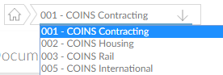
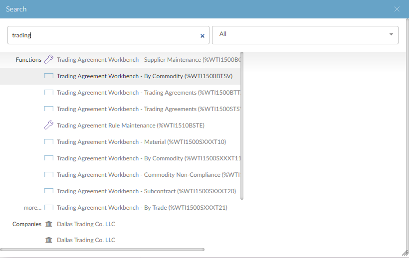
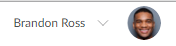
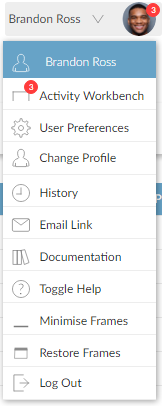
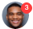

The page banner appears at the top of the
It includes the following:
A

The Global Search allows you to find records in

For more information, see Global Search.
The Desktop button allows you to switch between a function in the main area and your
The Report Status icon  shows two indicators:
shows two indicators:
If you move the mouse pointer over the icon, a popup lists the reports that are generating.

Click the icon to open Report Status. For more information about Report Status, see Report Status.
The page header shows your user name (or user ID) and an image to represent your account.

It also gives access to a menu of other options.

See also: Changing Your Account Image and Display Name.
If you have any outstanding activities assigned to you, an indicator on your profile picture shows how many: . If you move the mouse pointer over the profile picture, then over Activity Workbench on the menu, a popup menu shows the activities.

For more information about the Activity Workbench, see Activity Workbench.